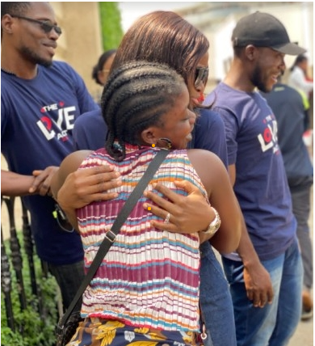

Love Art 2.0
| Febuary 03, 2022


"We make a living by what we get, but we make a life by what we give." - Winston Churchill
All around the world, February is known as the month of love. In commemoration of this, Tech4Dev, in partnership with our technology partner, Prunedge, carries out the Love Act every year. The Love Act was born out of a need to show love to the people in our immediate community.
Thirteen teams were coiled out from Tech4Dev and Prunedge in Lagos, Abuja, and Akure. Each team was made up of at least ten people and was tasked with showing love to specific groups of people according to their discretion. The organizations disbursed a standard amount of fifty thousand naira to each group for them to successfully carry out their various projects.
Group 1 was assigned to LAWMA Officials; Group 2 was assigned to BRT Bus Park; Group 3 was assigned to an Orphanage home. Group 4 was assigned to Secondary Schools; Group 5 was assigned to Market Women; Group 6 were assigned to Security Guards; Group 7 were assigned to LASTMA Officials; Group 8 were assigned to Street Hawkers; Group 9 were assigned to Keke Napep Drivers; Group 10 were assigned to Petty Traders; Group 11 were assigned to Teachers; Group 12 were also assigned to Petty Traders (Abuja), and Group 13 were assigned to Security Guards (Akure). Eleven teams moved out on the 17th of February between 8 am – 1 pm, sharing love in the way they collectively decided to, while the remaining two teams did their love act projects on the 21st of February, 2022.
Group 1 went to the LAWMA officials' station in Ogudu, where they met about 15 officials on the ground who they gifted food items like 5kg Rice, four sachets of groundnut oil, three sachets of tin tomatoes, and 500kg of salt each. The beneficiaries who were so excited thanked and prayed for the group members as they received the items
Group 2 visited the Ogudu bus stop to cover the transport fare of passengers in 18 buses and 23 tricycles popularly known as Keke. In total, they covered the transport fares of the passengers in 42 transport vehicles conveying passengers to different locations. The passengers were so thankful, and out of gratitude and curiosity, some of them went ahead to follow Tech4Dev and Prunedge on social media.
Eight people represented Group 3. They visited Bales of Mercy Orphanage, Akinola Street, Bariga and presented them with foodstuff. The foodstuff given consisted of four packs of noodles, ten rolls of milo and milk, 20 pieces of salt, one carton of sachet tomatoes, one carton of oil, 25kg bag of rice, and five packs of insecticides. The facility manager was super grateful, and prayed for the group and the organizations. It was a fantastic experience.
Group 4 visited Ogudu Senior Grammar School, where they held a mini award ceremony for 10 SS3 students. The award ceremony was held after a brief introduction of the organizations (Prunedge and Tech4Dev) and an encouraging charge for the young students to go on to embrace careers in STEM as they forge ahead beyond secondary school. The school children were also encouraged to see technology as a legal pathway out of poverty and solving the problems around them. Group 4, Mr. Olawale Makanjuola, Vice-Principal of Ogudu Senior Grammar School, and other teachers were in attendance
Group 5 and Group 10 merged and visited the Ojota stop. They brought smiles to the faces of petty traders as they gifted twenty-five of them the sum of four thousand naira each. The petty traders were so happy and moved. One of them prayed for them and gifted them sweets from her wares.
Group 6 went along Ogudu to the Ojota route and gifted sixteen security men stationed around the area food items like Spaghetti, Noodles, Groundnut oil, Salt, Sachet Tomatoes, Semo vital 1kg, small bags of rice, Power oil, Chicken flavor Maggi, Nylon bags.
In Group 8, nine team members visited the Last officers at their various workstations around the Kosofe axis. On arrival, they distributed 15 hampers to the officers. The hampers distributed contained different food items like; Rice, Spaghetti, Noodles, Semovita, Sachet Tomatoes, Vegetable Oil, Seasoning Cubes, and Salt. The officers were full of gratitude, and the group members and organizations were well.
It was a good day for street hawkers along the Ojota axis as Group 8 team members flocked to their environment to share goody bags. They shared a total of 27 goody bags containing packs of Indomie, sachets of groundnut oil, salt, Maggi, Semovita, a bag of rice and tomato paste to 27 children and older women hawking. The recipients were full of thanks and excitement
Group 9 visited Ogudu Express and gifted Keke drivers cash gifts. Some were very skeptical about collecting the donations but eventually warmed up to the team members. The team members gifted sixteen Keke drivers three thousand naira each.
In Group 11, the team members paid a visit to Ogudu junior Grammar School, where they enlightened the teachers on the importance of acquiring digital skills and shared gift items with them. The elated teachers were honored, and thanked the group members for their effort.
Group 12 consisted of representatives from Tech4Dev, and Prunedge Abuja, and they gave out the sum of N5,000 each to 10 petty traders in Wuse/ Berger axis. As they did, they received prayers from some of them amidst genuine smiles and appreciation.
Group 13 consisted of six representatives from Tech4Dev and Prunedge Akure. They shared 22 packs of foodstuff like Sugar, Groundnut oil, Semo, Milk, Tin Tomatoes, Milo, and Noodles among security guards within FUTA premises.
The Love Act 2.0 was a success, and we are very excited about how much impact we made by putting smiles on the faces of those surrounding us. We look forward to the next edition of the Love Act, and we are hopeful that the next edition will be even better.